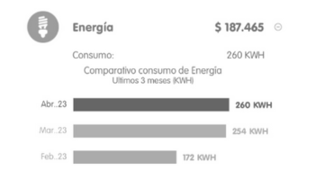
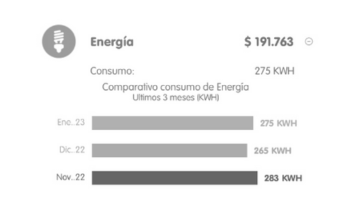

By: Sofía Montoya Mejía
Linear regression: kWh vs Month
This second part of the project must be done individual.
For each plot, you must show evidence about your bill house public services to proof that your information is true.


About the observed behavior
According to the collected data from the plot, explain why the graphic displays that behavior in terms of:
- The increasement and decreasement of the regression:
The diagram shows a positive negative relationship. Negative because when analyzing the graph we can discover that the linear regression is decreasing, this is because in the equation given by line (y=-3.10x+254.50) the slope of the line is negative, therefore it is expected that the values in y keep going down the more I increase x.
- The relation among the dots regarding the colors:
There is a variation in each energy expenditure per month, since changes are observed in the KWH consumed, but they remain almost at the same range, except for the months of December and February, which are the months in which it is evident. the lowest level of KWH consumed, averaging then, decreasing values
- Estimate how many energy you will consume in the next month. Use LaTeX syntax in order to compute that:In month six following the equation y=-3.10x+254.50, it gives as a prediction that in month 6 235.4 kWh will be used
- A conclusion about your own interpretation on how you should reduce or remain stable the consumption of electric energy:My interpretation of this is that energy costs should be reduced trying to keep them at approximately 172, which has been the lowest consumption in the last 6 months, this corresponds to the month of February; and finally, try to lower it little by little, since there is evidence of an excessive use of this resource and, in turn, its mismanagement.
Linear regression: Residents vs kWh
About the observed behavior
According to the collected data from the plot, explain why the graphic displays that behavior in terms of:
- The increasement and decreasement of the regression:
In this case the graph is positive, because y= 21.38x + 75.87 means that it is growing because the number that accompanies the x is 21.38, which is greater than 0
- The relation among the dots regarding the colors:
In the case of students with 3 and 4 residents in their home, we see that some KWH variables are very close to the value estimated in the linear regression.
- Estimate how many energy will be consumed in a residential unit where $200$ people live. Use LaTeX syntax in order to compute that:
200 residents
By using the equation y = 21.38x + 75.87 and we change the x by 200 residents, we have as a result 4351.87 KWH consumed.
- A conclusion about your own interpretation on why is given that relation between these two variables:
In the graphic we see that as the number of inhabitants increases, the KWH spent also increases, but the reality is that this is false, since the amounts of electrical energy spent depend on the consumption produced in each home, regardless of whether there are 2 or even more people.